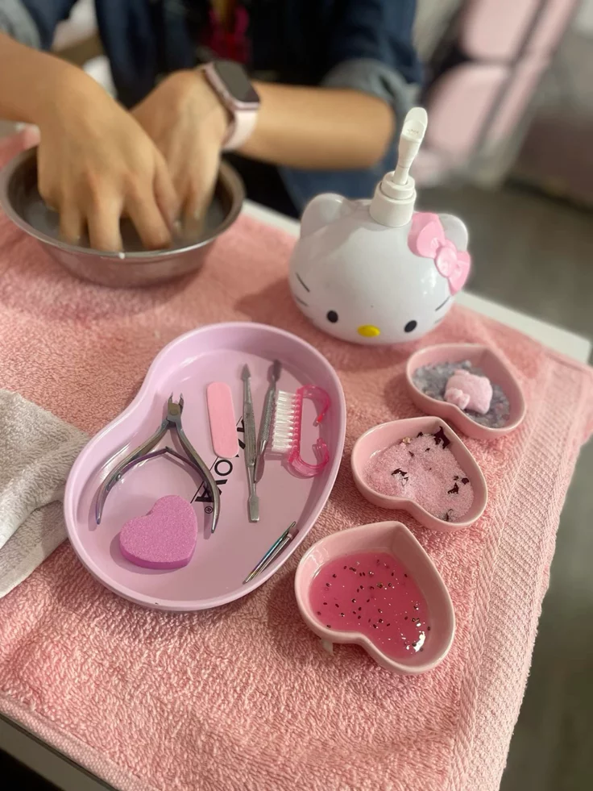

1. Preparación
-Limas: unaa 180 (forma) y una Buffer (pulir).
-Empujador de cutícula o palitos de naranjo.
-Alcohol o Cleanser con toallitas de algodón (que no suelten pelusa).
2. Aplicación
Primer/Deshidratador (para adherencia).
-Base Coat.
-Esmaltes de color.
-Top Coat (brillo final).
3. Equipo y Acabado
-Lámpara LED/UV.
-Aceite de cutícula (para el toque final).
